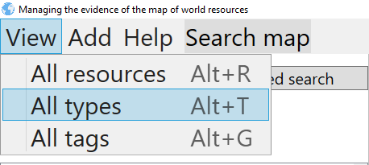
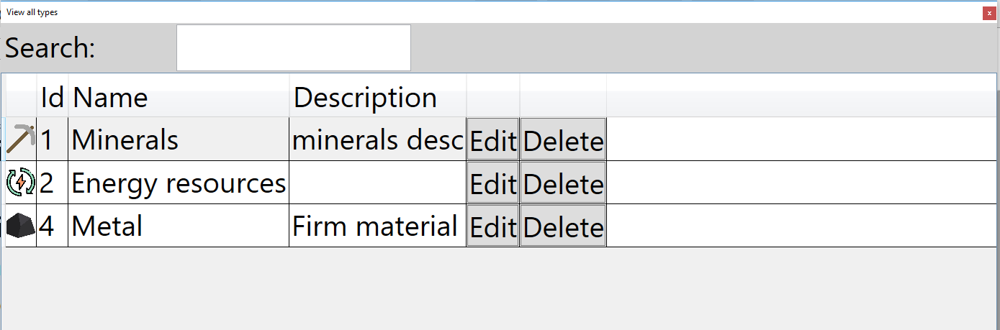
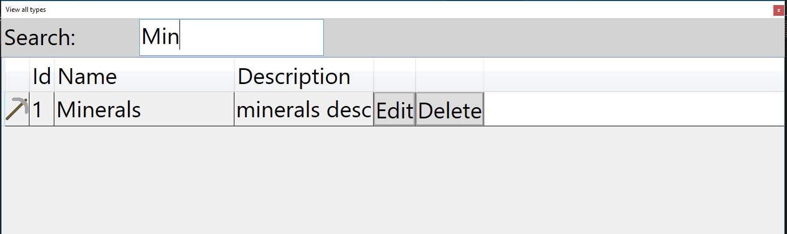

View all types
You can overview all types in table view. Process of overviewing should start with pressing button View->All types, or by pressing shortcut key combination ALT+T

That action will open window that looks like this:

You can search types using search field on top.

There are options for editing and deleting types.